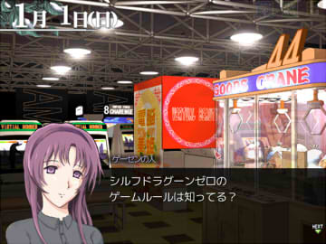

■2011-01-15 (土) シル学 テストフェイズへ▼
世間ではセンター試験、これを見る頃にはすでに終わっていそうですけれど、
受験生の皆さんは、センター試験前も試験後も、
お体にはどうかお気を付けて、がんばってください。
【シル学 テストフェイズへ】
それぞれのイベントやデータ単体の中身としては、
自分としてもまあまあの出来にできたと思うのですが、
実際に通しでやってみると、繋ぎが変だったり、
単品を活かせなくて面白くなかったり、戦闘バランスが
おかしかったりすることが、よくあります。

次のテストフェイズでは、実際に通しでテストプレイをしながら、
バグの発見や、さらなる面白さアップのヒントを探っていきます。
【ウディタ本の執筆】
今のところ、どのくらい実際に出る見込みがあるのか私には分からないのですが、
WOLF RPGエディターの初心者向け本を書くことになりました。
全国の書店で発売されるものです、いきなりすぎて信じられません。
しかし、普通のライターさんでも何ヶ月もかけて書くようなボリュームなので、
私の場合、かなりの時間がかかりそうです。何より、本格的に執筆を始める前に、
WOLF RPGエディターのVer2.00を仕上げなければなりません。
ゆっくりでいいとは言え、現状、いっぱい抱えてて
時間に余裕のない状況で、これまた大変なことになってきました。
でも、面白そうなので、ぜひ頑張りたいと思っています。
去年の８月から半年も経ってないのにアレもコレもぶち込まれすぎてハァハァです。
ただ、本の執筆なんてしたことがないので、できあがるものが
果たしてどうなるか、何とも言えません。 一部だけ読んで分かる文章は書けても、
総合的な構成力の面では、論文以外では未経験なのです。
【携帯サイトは？】
入って来る情報から分かる範囲では、現在、
モバイル版シルフェイド幻想譚の開発・実装を続けてくださっています。
幻想譚の要実装リストも、たぶん数えるほどになってきたので、
あと２～４週間くらいで幻想譚が完成して、
公式サイトがオープンされるかもしれないなあという感じですが、
こちらも、あんまり詳しい状況は聞いていないので、
正確な時期については何とも言えません。
ちなみに幻想譚は、かなりの完全移植を目指してくださっているので、
携帯用なのに、PC版とほぼまったく同じものを遊べると思います。
びっくりしますよ、何もここまでやらなくても！ って思ったほどです。
不景気ゆえに、お金のために締め切りを優先して発売し、
結果的に信用を落としてしまっているゲーム会社さんも出てきている中、
クオリティ重視でがんばってくださるのは、本当に嬉しいことです。
【今後の動向】
取り急ぎ、【ウディタ本の目次】だけダーっと書いて、方向性だけ決めておきつつ、
【シルフェイド学院物語のテスト】を行っていきたいと思います。
言っている内にクリフ深淵録２話も書かなければなりませんので、
やることは山積みです。
それでも、シルフェイド学院物語の「新しく作る必要がある部分」に関しては、
ほぼ終わったので、あとは、気楽だけど数が山ほどある「修正」作業がメインです。
といっても、たぶんテストでバグなどを散々洗い出した後も、
幻想譚みたいにバグがポコポコ出てしまうと思うんですけれどね。
そんなときのための最後の防衛線が、オンラインアップデートです。
シルフェイド学院物語は、いちおうご飯代のためのシェアウェアとはいえ、
まずは楽しんでいただけるものにしないと意味がありません。
自分自身が、これからも末長くゲーム開発を続けるためにも、
皆さんに心から楽しんでいただけるものになるよう、がんばります。
それでは、作業を続けます。
2011-01-15 (土)  カテゴリ: シル学
カテゴリ: シル学
 カテゴリ: シル学
カテゴリ: シル学